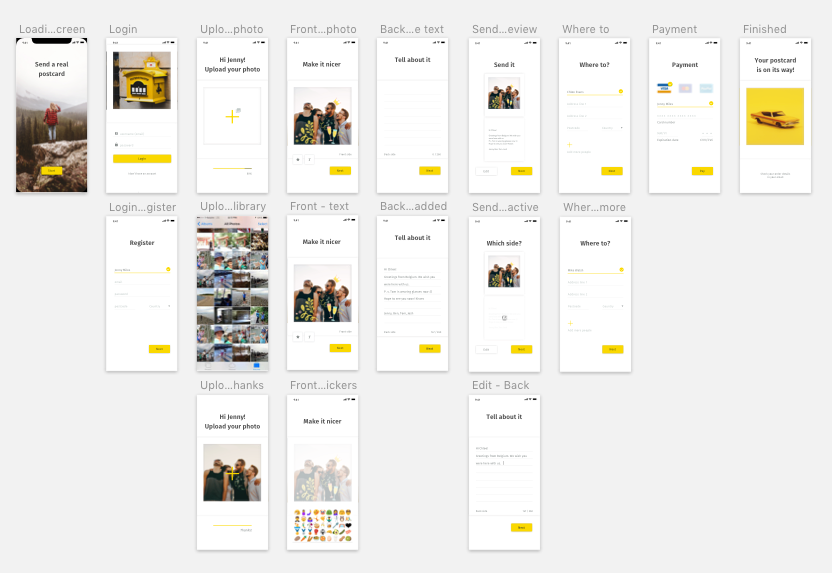
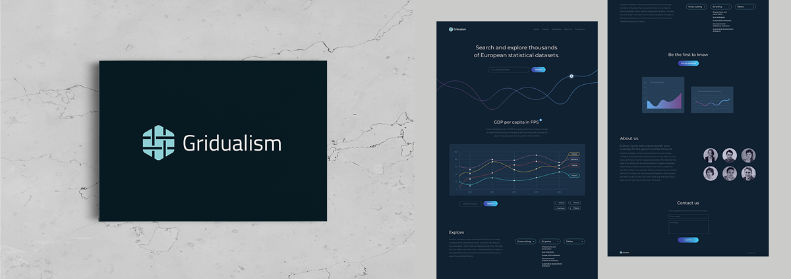
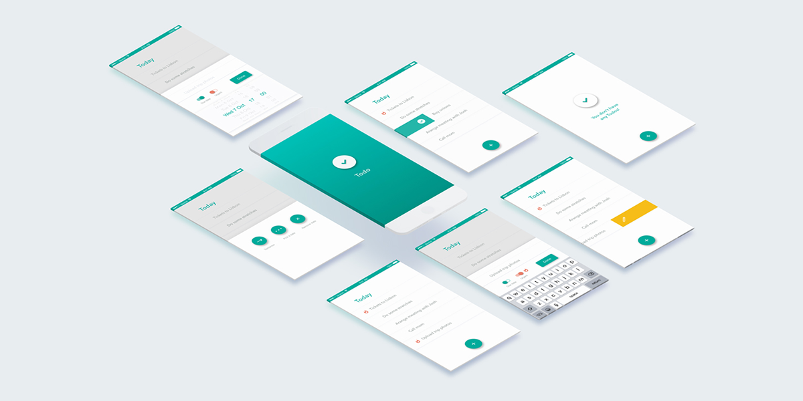
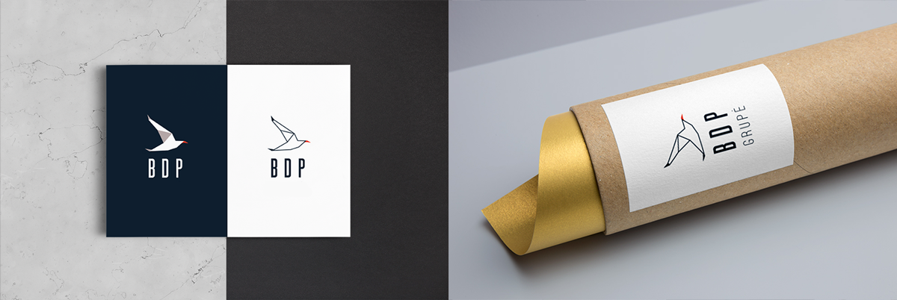
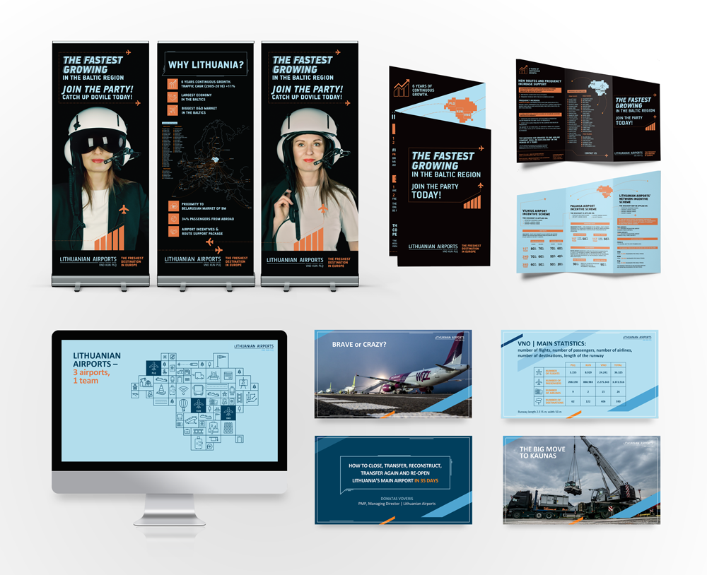
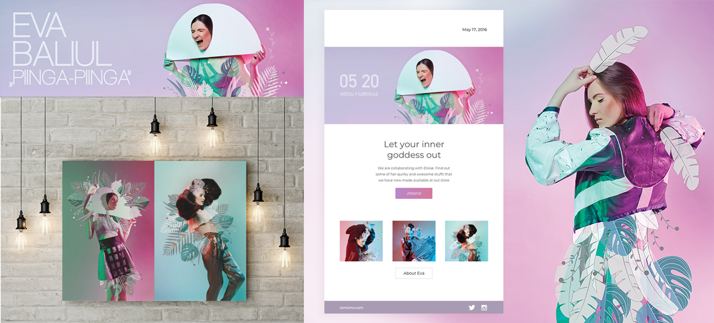
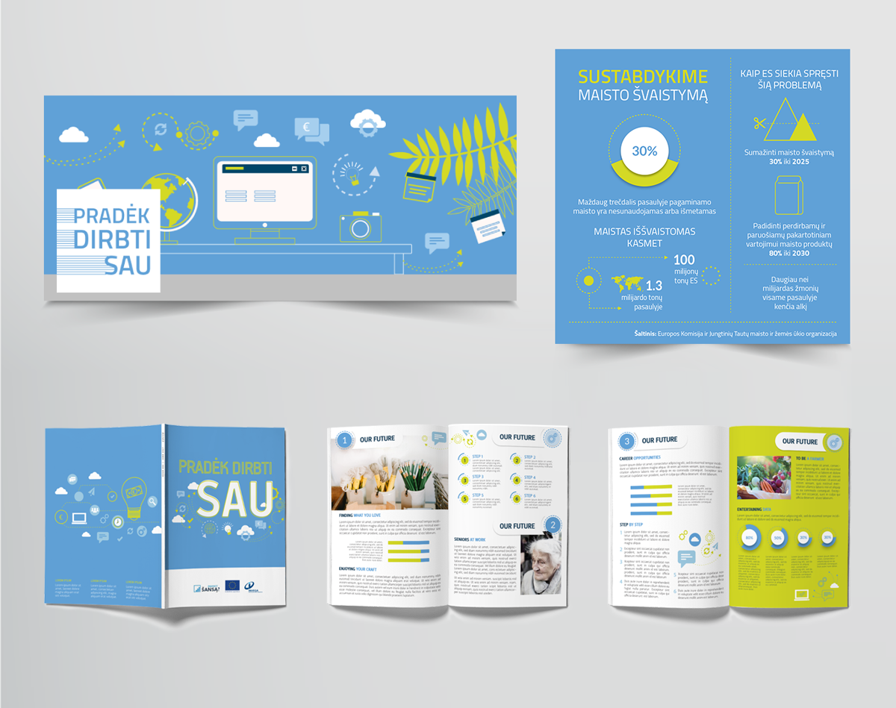

Graduated with a Bachelor's degree in Graphic Design in 2011. All through my college years and after, I've been working on branding, print/digital design, illustration. Having a background in graphic design assists me in creating Mobile Apps and Websites that are not only functional but also pleasing to the eye.
An analytical thinker by habit and a creative at heart. I feed off of high energy collaboration, freshly roasted coffee and am thirsty for knowledge. Currently looking for a role as a UX/UI designer in a fast-growing company in London.
Overview
Years ago, a holiday wasn’t complete until you sent postcards to friends and family to let them know you were having a better time than they were. I created a mobile phone app called “The Digital Postcard”. The app will allow users to create their own postcard by using a photograph from their phone library, the card will be printed in the home country of the recipient and then posted to the recipient’s address. The app I did for David Travis course "User experience: The Ultimate Guide to Usability" on Udemy.
Hats worn UX design, UI design
The problem. The travel postcards are usually quite old school and not personal. Also, it is time-consuming to find the right one, a stamp and a postbox.
Findings
After carrying out the user research and making surveys I clarified my goals and tools for "The digital postcard" app:
Find the key user group. I created personas to better understand the target audience. The tool is for relaxed travelers who are a little bit sentimental for the past and old-school rituals but makes comfort a priority.
Identify the key tasks. To send a personalised photo (postcard) from your phone library to a friend's post box. Also, to build an emotional connection with the audience through UI. I used a copy interacting with the user, chose a yellow accent color to bring the holiday atmosphere and positivity into an app, used an instant photo frame to bring back the nostalgia, added photos of travelers.
Encourage creativity. I made a "Randomise" tool for putting stickers and writing text to personalise the photo.
Make the experience quick and easy. I tried to reduce complexity in an app, make it all about that one thing so that the consumer is not confused with what action you want them to take.
Give them clear steps to where you want them to go. Simple is about clarity and focus. Test and iterate. After prototyping, testing and getting the feedback, I found that people want to have the ability to add more addresses and to pay instantly with the phone without filling the blanks.
Test and iterate. After prototyping, testing and getting the feedback, I found that people want to have the ability to add more addresses and to pay instantly with the phone without filling the blanks.


Gridualism branding and UX/UI design
Overview
Gridualism is a startup for exploring European statistical datasets through interactive charts. I created branding and a landing page. The website is in progress but soon to be released.
The problem It is hard to keep the attention of the customer with the complex data. Also, we want to make statistics look hot. In other words, to attract interest, new customers and be visually appealing.
Findings
After doing my research on the competitors and making interviews with potential users I clarified my goals and tools for Gridualism branding:
Find the main user group. The tool is made mainly for young professionals who could use statistics for illustrating articles and presentations.
Simplify. Simple makes life easier for others but simple also helps you get them to take the action you’d like them to take - use and share your graphs. Since statistics could be hard to understand, I tried to reduce complexity in overall branding and web design.
Make it visually appealing for a target audience. The target audience is trends driven. So, I incorporated material and flat design trends. Also, their simplicity makes it perfect for visualizing complex data and statistics. Provided visual continuity to the information and connected segments to blocks to direct the eye through them. I used brightly colored gradients for the most important elements in landing page due to their ability to attract the eye. Suggested to use interactive elements in graphs: videos, GIFs, interaction. It is proven to generate the highest engagement rates and holds the attention for longer.
Logo Gradualism, from the Latin gradus ("step"), is the principle or policy of achieving some goal by gradual steps rather than by drastic change. I chose to represent this through the symmetrical, repetitive shape of the icon of a logo. Also, the name of a brand is made of grid + dual. So, I used a grid pattern made of two lines to complement it.

Todo app
Hats worn
UX design, UI design
The problem Too many features in to do apps make managing to do lists complicated.
Findings After carrying out the user research and making surveys I clarified my goals and tools for "Todo" app:
Find the key user group. People who care about productivity and making the most of their time. It means that the app should be really easy to use.
Identify the key tasks. To add and delete the tasks.
Simplify. Prioritise the key task without adding irrelevant features.
Keep design clean and simple.
Test and iterate. After prototyping, testing and getting the feedback, I found that people want to have the ability to scroll through the different days easily.

BDP branding
Overview
BDP ("Baltic digital printing") is one of the biggest large format printing companies in Lithuania that provides print and promotional solutions to a wide range of industries. The main qualities of the company: ambition (willing to take complicated tasks), speed (open 24 hours a day), trustworthiness (10 years of experience, trusted by big brands not cutting on quality).
Findings
After doing my research on the company and their competitors I clarified my goals and tools for BDP branding:
Use the daily tools of the company (cars, paper tubes, worker's uniforms, gifts for the clients, media) for promoting.
Personalize. The big part of this job is still in the hands of people: discussing, designing, preparing for print, cutting, delivering, installing. I used a symbol of origami - for the love of paper, handwork and human's dedication in the form of craft.
Create a symbol/character telling the values of the company. The seagull represents adaptability, resourcefulness, and opportunities. Its meaning focuses on the need to find ways to survive and do even the uncomfortable to succeed. Also, it is a bird of the sea and this is what the first word of the name of the company (Baltic) connects to.
Create a shape and color palette giving the feel of professionalism, reliability to balance the playfulness of the seagull. I used calm blue, gray tones with a hint of orange (one of the qualities is ambition after all) and complemented it with strict lines symbolising professionalism in craft, attention to detail.

LTOU conference
Overview
Lithuanian Airports - is a state enterprise, which unites and manages Vilnius, Kaunas and Palanga airports, develops the activities of the three airports in a coordinated manner, offers a wide range of services as well as high standards of the quality of service rendered to passengers and partners. The ideology and strategy of operation of Lithuanian Airports are based on the principle ‘United but different’.
Hats worn Visual design, presentation
I created design elements for conference and presentations.

Urban jungle
Overview
All of the women have a powerful inner goddess/animal inside. Though, when life gets busy and stress levels get high, embodying that gorgeous, divine energy can be challenging. Eva Baliul fashion collection "Urban jungle" praises showing your power and creativity on the outside with some statement piece of clothing when the inspiration is needed.
I was collaborating with a photographer Eva Grin and fashion designer Eva Baliul and created illustration, posters, postcards, newsletters and social media banners for Vilnius design week.
Hats worn
Concepting, visual design, illustration

Invega editorial and social media banners
Overview
Invega is a team of finance experts which develops and implements effective solutions for promoting entrepreneurship. The company manages financial instruments designed to help with starting up or expanding a small or medium-sized business, i.e. soft loans, loan guarantees, interest rate subsidies, and support for the first job.
I created design for editorial and social media banners for promoting the freelance opportunities of young workers.
Daily UI challenge
Overview
The Daily UI challenge is a newsletter subscription service which prompts you with various design challenges, to help you expand your design skills, grow your portfolio, interact and gain feedback from a community of designers. My task is to design a different User Interface element every day - for mobile or desktop. Ongoing project.